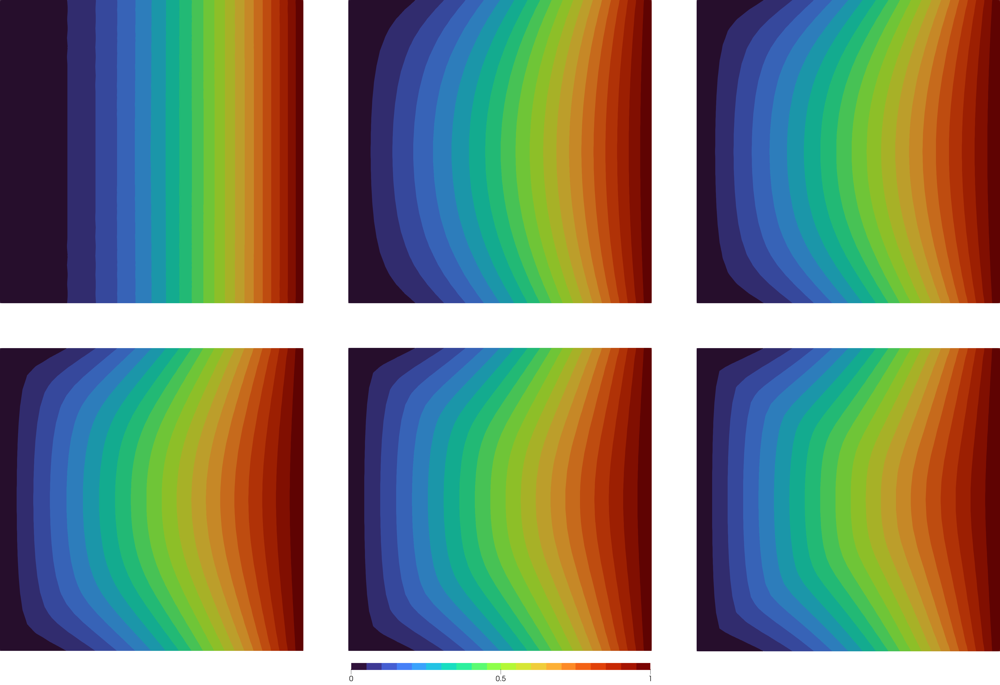

A Dirichlet Problem
Let's go through a code for the p-Laplace equation on a unit square
\[\Omega = (0,1)^2\]
with boundary
\[\Gamma = \partial \Omega\]
and inhomogeneous Dirichlet boundary conditions given by
\[\begin{aligned} -\Delta_p v = 0 &\quad \text{in}\; \Omega,\\ v = x_1^2 &\quad \text{on}\; \Gamma. \end{aligned}\]
First, we have to load the package PLaplace:
using PLaplaceThen it is useful to set up a results directory where all the results for one test case are stored. The following functions will do that:
output_path::String = "results/dirichlet-square/"
mkpath(output_path)If you do multiple computations, e.g. for different values of p, you might like to compare the runs. Therefore, you can create a statistics file with the corresponding header. Here, the guarded flag means that if the file already exists with a header, the file will not be cleared and rewritten. This is in particular helpful if you have already run a script and want to keep the results.
statistics_file = output_path * "statistics.txt"
write_statistics_header(statistics_file, guarded = true)Now, we can create the mesh of our computational domain. PLaplace.jl is based on the finite element library MinFEM.jl. Some basic functions are re-exported, so we can simply use
mesh = import_mesh("../meshes/square.msh")
dirichlet_boundary = select_boundaries(mesh)You can also additionally load the MinFEM.jl package to get access to all its features. For example, you could generate a custom mesh of the unit square, e.g., with 30x30 nodes.
using PLaplace, MinFEM
mesh = unit_square(30)This can be quite useful later on if you also want to do post-processing and custom projects.
Then, we specify the boundary condition analytically by
g(x) = x[1]^2If no analytical description is available, it is also possible to define a coefficient vector using MinFEM.jl's functionalities, but that would exceed the scope of this tutorial.
With the preparations done, we can now run the algorithm by
data = solve_plaplace(p, mesh, g, dirichlet_boundary)The returned object data is of type PLaplaceData. In this object, all kinds of relevant information are stored. Please see its documentation in the library for all properties. Here, we want to limit ourselves to its two main use cases.
First, we can use it to write an entry to the previously created statistics file
write_statistics(statistics_file, data)Second, we can write the result to a .vtk-file
write_result_to_vtk(output_path * "result_p=$p", data)This file can be used, for example, to visualize the result in Paraview. Some instructions for that can be found in the corresponding section of the MinFEM.jl documentation.
Here is an example of what different solutions might look like.
|  |
|---|
| Solution of the problem for various p = 1, 2, 3, 5, 8, 15 (left to right). |